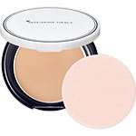
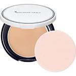
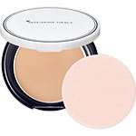

返回列表
产品名称：インテグレート グレイシィ エッセンスパウダーBB 明るめ～自然な肌色

資生堂 インテグレート グレイシィ エッセンスパウダーBB 明るめ～自然な肌色 １
メーカー 資生堂
JANコード 4901872275298
商品の特徴
うるおい成分
ローヤルゼリーエキス、うるおい複合成分（保湿成分）配合
なめらかパウダーですっぴん美肌復活！
仕上げ用おいろい×ナチュラルメーク×化粧直し
SPF22・PA＋＋
1年中使える
成分・分量
-
用法及び用量
＜使用方法＞
●使用量が少ないと、十分な紫外線防御効果が得られません。
●紫外線防御効果のあるインテグレート グレイシィ エッセンスベースBBなどの化粧下地などとの併用をおすすめします。
 
